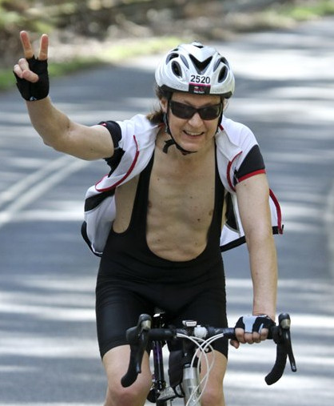

Since my last update the anniversary of my diagnosis has passed, the calendar year ended, I had another birthday, summer has come and gone (with its apricots and nectarines) another university teaching year has started (not that it affects me much) and I have just had another specialist appointment. I've not been too sick to write a blog, just occupied with better things.
Getting over the bike accident has taken a while and my upper body strength is still a bit less than before the accident. I've done a bit more climbing. The harder climbs seem harder than they once were, partly because I seem to have lost some climbing technique - I feel a bit like a beginner again. In December I started getting a salty taste in my mouth (a cancer side-effect) which I have had intermittently. I also developed very sore feet, and this has persisted. I've recently had some vitamin B12 injections, though its not clear they have helped. The problems started around the time I was seeing the exercise physiologist, who said my jogging technique was wrong and should be changed. Maybe that did some damage which is taking a while to heal.
On a more positive note, in January I bought myself a second hand road bike. I was a bit surprised how different it felt compared with my old hybrid, and it took some getting used to. But now my old bike seems so slow and heavy. I rode about 3000km last year. So far this year I have ridden around 260km on my old bike and almost 1000km on the road bike. On Monday I morning I rode to Mentone and back. Riding down the Bay trail on a cool sunny morning with minimal wind was a treat. From Mentone back to St Kilda I went along Beach Rd and averaged 33km/h. There wasn't much traffic and it was a lot of fun. In the afternoon I went to the gym for an upper body workout. I think I can declare myself reasonably fit! So I was reasonably hopeful as I went off to see the specialist, but there was the lurking fear that my PSA level had started to rise. Its been significantly more than a year on hormone therapy so its likely to happen soon. Fortunately not yet - its still 0.1, which is great news.
Boring perhaps, but good for me - my PSA level is still 0.1. Apparently there is a big variation in how long it takes for PSA levels to start rising. Hopefully I will be at the good end of the spectrum. I'm still fit and in good spirits, though my blood pressure is a bit variable and I quite often get very tired. Its getting a bit cold and damp for cycling and rock climbing, though I have done 50km today and close to 3000 or the year so far, including some nice long but slow rides with the Moreland BUG. My bike chain should have been replaced quite a while ago but this afternoon there was a knock on the door and a parcel arrived containing a new chain and various other bike bits, so I have some maintenance to attend to. I have been thinking of enrolling for Amy's Gran Fondo in September. Its a 110km timed ride in which the top riders (not me) qualify for the world amateur championships in 2016, so its reasonably serious. Zooming along the Great Ocean Road with a bunch of cyclists does have its appeal, though I'm not so sure about keeping up with everyone and battling the hills that follow could rather punishing.
My research has been progressing, with a couple of papers submitted, and a new one started. Juggling research, keeping fit and everything else is a bit of a challenge. It would be nice to have more time when I'm not too tired. I do spend too much time watching not so good television in the evening, and not enough time listening to live music. Maybe I can make more of an effort to change that.
No, I'm not dead yet, or turned religious. Serious road cyclists will understand how close I have come though. Saturday started as a supposedly "easy ride" with a friend but turned into a 160km ride to the memorial cross on the summit of Mt. Macedon and back. They don't call him "death march" Frank for nothing! I'm not complaining - I could always have said "no" and, knowing Frank, I was prepared for something not as easy as advertised. After 70km cycling mostly up hill with a head wind, the real climb starts. It looks like a gentle enough slope at first, but your legs demand almost the lowest gear you have. And you can see the dramatic increase in gradient ahead. Sitting at the Mt. Macedon cafe/general store its so easy to scoff at the struggling cyclists you see before or after you have done a day of rock climbing. Now I know what its like to ride up that hill. And the climb goes on past the general store. And on, and on. A slightly lower gradient at first, but towards the bend in the road it ramps up, and around the bend its 13%. After the toughest section something broke. I think the weakest link was my mind rather than my legs, but both were close to their limits. I admit I had a bit of a rest. Frank waited at the Camels Hump car park and managed to convince me to carry on up to the memorial cross rather than turn back. That part is easier and you get the photo and a greater feeling of accomplishment at the end. There is no choice but to turn back, though the view of Melbourne so far off in the distance is intimidating - you know you are only half way.
We descended the far side of the mountain. Frank said it was the safer route but it sounded very much like an excuse to make the ride more "interesting". It did lead to the highlight of the day though: zooming along Kerrie Valley Rd. and Mount Eliza Rd. No traffic, a good road surface and nearly all down hill. Confidently zooming along at 70km/h is a lot of fun. When we got back to Essendon our average speed for the return journey was 30km/h, though it had dropped a bit lower by the time we got home, just before the sun set. I had previously done only three rides over 100km, the last one just three days before, so this was by far the toughest. I did register for Amy's Gran Fondo and it seems like I'm up to the challenge.
Was the pain and suffering worth it? I guess so, though I can't say I'm looking forward to the next big hill and would be happy to stick with less "bumpy" rides in the future. Road cyclists to tend to go on about the awesome climbs they have done. I wonder if they actually do enjoy it or its driven by ego. Exercise should be good for my immune system, particularly the natural killer cells that are attacking some of my prostate cancer, according to my very vague understanding at least. But keeping fit does take time and not all of it is fun by any means.
What else has been going on, I hear you say. I've had a couple of papers accepted. One on spectral debugging and another on my new Pawns programming language. Due to continued encouragement (aka nagging) by the journal I have released to source code for the implementation (perhaps somewhat prematurely) and created a home page for the language. It even has a neat logo, so it must be good! And there is another mostly written new paper, plus my paper on set similarity I should really get back to. My partner was in a play and got a nice mention in a review, despite her smallish role. And my daughter is in the finals for a French poetry competition and debating, amongst other things. The broad beans are growing, the blossom has started and the possums have not yet attacked the fragolino grape (fingers crossed). I'm getting used to living like this. Long may it last.
Last Sunday was Amy's Gran Fondo. Five of us rented a house in Lorne for the weekend and Frank gave me a lift down on Friday afternoon. It was perfect weather - the first taste of the warmth to come. On Saturday the others rode to Wye River for breakfast. I had prepared my breakfast but I joined them for a coffee. A beautiful 18km ride along the Great Ocean Road on a cool sunny morning. Its a shame the coffee at the end was not so inspiring. Lorne was flooded with cyclists of course - almost 6000 had registered for the various categories of rides. The start on Sunday was not too early - we had to be in position at 8:15 and rolled out a bit after 8:30. I didn't push myself too hard, but with so many other cyclists and going at a decent pace I was concentrating on the riding a bit more than the views. The first and longest climb was not too bad for me. I passed one person who had suffered a heart attack and was receiving CPR, which was rather concerning but I later heard he was ok.
I stopped at the aid station at the top to fill a water bottle and grabbed a couple of protein bars. If you want a good time you don't stop at all and ride with a fast bunch, letting others do most of the work. I also stopped later to let someone use my bike pump. Frank stopped due to a mechanical problem which caused him to miss out on qualifying for the world championships by just a few minutes - what can you say. The only failure I had was the battery in my bike computer, which meant I was a little unsure of where I was on the course and I didn't find out my maximum speed. The last climb was a bit tough but I made it to the finish line with no problems. My salute was not a V for victory but a peace sign - Australia started expanding its bombing of Syria the next day, with what seemed to me to be very little debate about the decision. The most enjoyable part of the ride was the descent back to Lorne, though some of the bunch riding and the views along the Great Ocean Road and on the first climb are also great memories.
On Wednesday I missed the Moreland BUG ride due to my specialist appointment in the afternoon, but I zipped around the Capital City Trail instead. I've been vacillating between fatigue and having plenty of energy. Given my currently fitness I was less concerned about my results this time. My heart sank a bit when we found out that my PSA level had risen to 0.2. The doctor said I shouldn't worry about it - its still very low. If worrying about it did any good he may have suggested it though. Levels do fluctuate somewhat, but the news is certainly a lot worse than its been for the last year and a half. Maybe it is a temporary fluctuation. Its bound to start increasing at some stage but given my good run so far, I had high hopes it would be delayed for a while longer. That evening was also my last meeting as a council member of the Proportional Representation Society, which I have been active in for many years. Last year I was not going to stand for council but was persuaded at the last minute. This time around I'm definitely out. Again, it had to happen at some time.
I should be out climbing today, but another bout of fatigue yesterday lead to me cancelling, which was a bit depressing. Recently I suffered severe fatigue for six consecutive days, spending extra time in bed for most of them. At the time I didn't feel too bad about it as I had no major commitments. But it does add up, and when it affects things such as anniversaries and planned activities its a real pain. Research has consequently been progressing frustratingly slowly also. Hopefully its just a passing annoyance and won't get worse in the near future.
And this hunger sure gives me an appetite! I've gained some weight recently and its hard to lose it, especially when I'm not exercising as much as I would normally. I'll skip breakfast tomorrow. Not really, but it will be delayed. Another bunch of pathology tests, some of which require fasting, which is not much fun. Complain, complain, complain...
On Friday I attended the "People's Climate March" with my family and caught up with a couple of friends. Its was the largest rally in Melbourne for some time, and the first of what will hopefully be a large number of big rallies leading up to the Paris summit. It is a shame the Paris march will not go ahead due the French government over-reacting to the recent terrorist attacks (perhaps if there were not French elections coming up they would have reacted in a more calm and measured way). The Melbourne march was still just a small fraction of the size of peace rallies I have helped organize in the past, which is a great shame. And it seemed to be an opportunity for many groups to push their own pet issues which are at best vaguely related to climate change. Its also distressing that so many of my intelligent, informed scientist friends who know that anthropogenic climate change is an extremely important and urgent problem do so little to reduce their own contribution to the problem.
On a brighter note, I clocked up 6000km on the road bike. It looks like I'll reach my goal of 10000km reasonably soon.
I rode to Mentone and back this morning. A nice cool morning and I thought it would be good to get a few more km before my specialist appointment next Wednesday, where I was very much hoping (but not very much expecting) to find out my PSA level had reduced again, or at least not increased. I planned to get back close to 12:00 then go to the gym. When I got home there was a message on the answering machine from a doctor I see, asking me to call back. I got my results a week earlier than expected and they were not good - my PSA has risen again to 0.4. My testosterone level has also gone up a bit for some unknown reason. The only optimistic interpretation of the results that I can think of is that the increased testosterone has lead to the higher PSA and if my testosterone can be inhibited further the cancer will get less active again. A more realistic interpretation is that I have a significant quantity of castrate resistant prostate cancer cells and the number is doubling every three months or so.
I still went to the gym, but after making a couple of phone calls. Telling my daughter when she gets home from school will be a bit tough.
On Sunday the family plus a couple of friends went climbing at Camels Hump. A pretty relaxing day for all concerned, but I did check out a grade 18 called Poxbow I was thinking of trying to lead. At the gym early this year we were encouraged to set some goals. One of mine was doing a 150km bike ride and another was leading a grade 18 climb.
On Wednesday I missed the Moreland BUG ride due to my specialist appointment, but in the morning I went for a 70km ride independently and caught up with them briefly. The specialist didn't seem overly concerned about my results. The previous PSA reading was 0.29 rather than 0.2 as I was told. It seems doctors tend to truncate results rather than round them. Or perhaps they understate bad news. An increase from 0.29 to 0.4 gives a significantly longer doubling time, so I was somewhat relieved. Mind you, if you compute doubling time using the previous 0.1 result it makes no difference. But maybe the previous reading was 0.19 and that was truncated also. Its easy to over-analyse PSA levels. I was told a doubling time of less than three months was considered "high risk" (whatever that means in this context) and greater than six months is (relatively) good. My testosterone level should be at most 0.5 but it is 0.8, so I'll change to a different ADT medication and we will see if that works better. Hopefully it will, but I am now considered to be in the "rising PSA" category - the next stage on the journey. However, I felt somewhat better after seeing the specialist. No need to panic just yet. There are also some new medications they might also try out on me before chemotherapy, so it looks like I might keep my hair for a while longer (not that it matters much to me).
On Thursday I returned with a friend to Camels Hump. Perfect weather and we had the cliff to ourselves for much of the day. I lead Poxbow quite easily, with minimal stress. Leading does seem a bit more scary than it once did though. I did a few laps plus struggled to get up a couple of grade 21 climbs on top rope - I managed to get up, but with some help. My fingers/forearms need a bit more strength it seems. If you add up all the grades of the climbs I did it was 2*9 + 3*18 + 3*21 = 135, which is way more climbing than I have done in a day for a very long time. And our traditional post-climbing pizza at La Taverna was extremely enjoyable. A great day!
I went on the regular Moreland BUG ride yesterday, to Craigieburn. Not the nicest ride I've done (a bit warm and dry, I was a bit low on energy and the planned side trip to the Merri Creek gorge was cancelled because the path was closed). But my daughter came along, which made up for it. It was her longest ride to date (around 66km) and on the way I clocked up 10000km since diagnosis.
In 2015 I signed in at the gym 176 times, rode 7217km, had two papers published, submitted another and released the first versions of the Pawns compiler. A pretty good effort I think. On Jan 10 it was the anniversary of buying my road bike and I rode about 140km to Mornington and back to clock up 7000km. If you want to ride more, buy a road bike! A few days ago I went climbing for an afternoon at Werribee Gorge and successfully climbed Snatch and Grab, a familiar grade 21, and did three other climbs for the first time, including a new grade 23 (which I had to rest on a couple of times). So my body is performing well, though its hard work to maintain my strength etc. My mental capacity is definitely reduced and my memory seems rather poor now. I finally have a complete version of my paper on set similarity, which I will submit to a journal shortly, but wonder how many more papers I will publish.
I think one of the most important events of 2015 was the Paris climate change summit. I feel I contributed a little to it at least, with some clicktivism, a few attendances at rallies and financial support for the Climate Council. As well as supporting such things I think its important we take responsibility for our contribution to global warming and change our behaviour to reduce it. Its very hard to calculate my own carbon footprint but for several years our household electricity consumption has been less than what we produce with our small 1kW photo-voltaic array. I paid for a larger PVA on a rental property, have plans for another and have also contributed significantly to the cost of a large PVA planned for my daughter's school - maybe this year they will reach their fundraising target and actually build it! I'm pretty sure cycling was my primary form of transport in 2015, but we do use a bit of natural gas and everything else adds up (such as the Italian Parmesan cheese and my share of the gym air-conditioning). I may not be carbon-neutral, but I have way less impact than the per-capita Australian average and probably less than the per-capita Chinese average. However, I think the fact that China manufactures so many goods which are consumed in places such as Australia means some of the Chinese emissions should be attributed to their trading partners. Here I am blogging about accounting - it must be time to stop!
There is no doubt I'm facing my toughest battle. Am I prepared? Not really - thats one reason why its so hard. When faced with something like this it natural to feel "if only I could have a bit more time", but I don't have that luxury. There will be pain, for sure. Lots of it. And it will go on and on. But it will eventually stop. Its great to get support from friends and loved ones, telling me to be strong and keep fighting, but in the end its my body and my struggle. On a scale of difficulty with one being the most difficult, its even harder than that - its beyond classification. Yes, death march Frank has struck again and persuaded me to attempt a ride up Mt. Baw Baw, tomorrow! If you hear nothing more from me I have probably had a heart attack. At least I will have ended with some humour.
Maybe I should apologise for that last post - I have now added a smiley at least. I was expecting to stretch my physical and particularly mental endurance but it turned out to be not so hard for me after all. I guess the lesson of the day is that, for some battles at least, its best not to tackle things head on and just rely on grit and determination. If you pace yourself, think strategically, follow the strategy and take things one step at a time you can achieve more than you expect. By taking it easy on the less steep bits and zig-zagging quite a lot on the steeper bits (taking full advantage of the lack of non-cycling traffic) I conquered what many think is the hardest road cycling climb in Australia, without getting off the bike to rest or even feeling I was approaching my limits. Not a great time by any means - the last 6km took me an hour (mind you, it has an average gradient of more than 10%). It was 70km of cycling in all, with almost 1900 vertical metres of climbing. I certainly appreciate climbing (on a bike) a lot more now.
My gym is involved in a fundraising project for the RMH, involving some pedaling. Sounds right up my alley so I signed up. Please check it out and/or donate.
Although I'm no longer on the council of the Proportional Representation Society there has been a recent flurry of activity surrounding a new Senate electoral system and I put in a submission to the JSCEM. One of the most outrageous aspects of the Bill has been amended but the process has been so rushed that the more subtle things such as the impact on the way votes should be counted seem to have been overlooked. Not an ideal way to run a country. The paper I submitted just before Christmas has been accepted subject to a few minor revisions - a good way to wrap up a little project which has been going for some years. The solar panels have been installed at the school, so perhaps my greenhouse footprint is now zero or better. On Saturday it was far from it though. We drove to Merrijig and rode up Mt. Buller and back then drove home. It was a nice ride. Reasonably tough towards the end, and the extra 1km beyond the village was really tough. But I made it (with no zig-zagging this time) and the descent was exhilarating. The heat, head wind and tiredness as we approached Merrijig made us very glad we hadn't set out from Mansfield instead!
I had my regular PSA and testosterone tests taken last week and will see a specialist in a couple of days to get the results. I've not been called by my other GP with bad news this time. Not yet at least. I try not to worry at all, but its difficult. Are the cramping muscles in my thighs last week a sign of the prostate cancer returning, or are they just due to not eating enough on the ride up Mt. Ridley on Monday, or the exercise bike training I did on Tuesday to prepare for the fund-raising? Are the pains in my chest a sign of the bone metastases or is it just from over-doing the chest press at the gym? Hopefully the news will good on Wednesday and I can relax some more. Mind you, I'm not even sure what a good result is at this stage. It seems unlikely that my PSA will not have risen at all and I don't want to wish for things that are unrealistic. Maybe its best to have no expectations and prepare to be detached if the news is bad.
At least my PSA level can. It has dropped from 0.4 to 0.3, which is a great relief (counting from the last reading of 0.1, that makes a doubling time of around 5.7 months according to my calculations). And my testosterone has dropped to below 0.5 so the new medication is working better. Mind you, it has its down side also. Its not a normal injection and when I went to my GP he offered me a local anaesthetic, which I bravely declined. Then I saw the size of the needle! Its an implant rather than a liquid or gel, so its like getting a skewer rammed into your guts. At least I now know its worth it.
It seems I'm in the habit of updating the blog just before my specialist appointment. Its potentially more positive that way. Mostly I've been feeling good and I can express that now, but if the news is bad on Wednesday it will be harder to look on the bright side. I did get rather depressed a while back. It started with a period of fatigue, which I still suffer from occasionally, then I felt like shit. After a couple of weeks of struggling to maintain a healthy degree of exercise, sunshine etc I started to shake it off.
I somewhat reluctantly joined meetup.com a while back, initially because I volunteered to give a talk about my Pawns programming language to a group, but I later joined the Melbourne Cycling group as well. Its a great use of the internet but I have reservations about the privacy aspects. It should be possible to have the benefits of getting in touch with like-minded people without our personal information being owned by a corporation. Perhaps its on the "to do" list of the Electronic Frontier Foundation. I've done four rides with the group, all in the last month. An initial easy one, mostly on suburban bike paths, and three great harder rides. They all involved over 100km of cycling at 25-30+km/h on flat sections, plus climbs of varying length and intensity. Highlights have included the croissants at the Kinglake Bakery, the descents from Kinglake and into Yarra Glen, averaging over 33km/h from Frankston to Safety Beach then sticking on someone's wheel at up to 43km/h on the flat to finally catch up with the bunch at Rye, and the views from Point Nepean. After the (135km) Point Nepean ride on Wednesday I did an 80km "recovery" ride on Thursday to Hurstbridge and surrounds and did 40km on Friday to round things off. It must be over 300km for the week and a record for me. Despite the fact that winter has officially started, we have been having typical Melbourne autumn weather (until today) and I have been making the most of it!
Its a bit of a distraction from writing and revising papers but I've been doing a bit of that too. One has been published, another I'm revising, another we have submitted to a journal, another we are extending and plan to submit to a journal and another short one I thought had been forgotten about looks like it will appear soon also. And thats not counting one (possibly two) that may appear in a local informal functional programming conference/unconference later this year.
I'm not looking forward to the rest of winter. The lounge room is already about 10 degrees. Soon we will be putting on the heater. And although we have used the sun for all our hot water so far this year, soon we will contributing to global warming on some days when we shower.
My PSA level has risen, as expected, but only to 0.4 (the same as six months ago). Its been suggested I stop seeing a urologist every three months as they just tell me my latest PSA level, request another PSA test, write a prescription for my medication and tell me to carry on. I had wondered if it was worthwhile. However, it was suggested I see a medical oncologist to discuss the possibility of having some pro-active chemotherapy, since the latest research indicates having chemotherapy early improves life expectancy. So I have an appointment booked for three weeks time, and before that I'll have another CT scan to see if there are any visible signs of cancer left. Its not likely there are any (though I still have cancer, of course) but if there are, its more likely chemotherapy will be recommended.
I did my first Audax ride yesterday - the Wandong Winter Wander. It started and finished in Wandong and was quite a wander, at 205km (my longest ride to date). It was also rather wintery - the temperature was minus three degrees at one point and the average for the day was three. For almost half the ride my bike computer failed to work because it was too cold. There was also fog for the first couple of hours and perhaps a minute of sunshine for the whole day. Fortunately I bought myself a new warm wind-proof jersey for the ride and borrowed an extra layer for by feet and hands (the outer gloves developed a layer of frost as we rode though the fog). Despite everything, I was reasonably comfortable and although being rather slow on the climbs I averaged over 27km/h. I really appreciated the people I was riding with keeping the pace comfortable for me, and the Audax people who organised the ride. It can't be much fun for a volunteer waiting alone in the cold for hours so they can provide a hot drink, delicious minestrone and other goodies for riders as they arrive, and stamp their passports etc. Hats off to them! And it was great to see re-usable cups and bowls used. It seems like despite the state of the planet throw-away cups are everywhere. I was anticipating either missing out on a cuppa or fishing one out of a rubbish bin. I'm not sure how many more Audax rides I'll go on, if any, but they seem to be a great bunch of people and I'm very glad I did this ride. I'll get my official stamped passport and badge once the paperwork has been done in France!
I saw the medical oncologist (and a urologist) yesterday. He did not recommend chemotherapy and suggested that if I had been given chemotherapy earlier it would not have helped significantly. Its seems that early chemotherapy is most helpful for people who do not respond well to hormone therapy and I have responded very well. I guess that counts as a good thing. The scan showed up various places where the cancer had spread but has mostly died due to the hormone therapy. There is a place in my upper spine where it was particularly bad. Hopefully the cancer has gone from there and won't return, otherwise I'll most likely have radiotherapy there at some stage. I'm also back to seeing a urologist/oncologist every three months (in fact I'll seeing both again in three months).
Everyone talks about length of life and quality of life. I'm still desperately hoping for a major breakthrough in prostate cancer treatment or, failing that, in dying with dignity legislation. I want the option of ending my life sooner if the quality is too low and I may well need some help if and when the time comes. But there are other dimensions to life.
There is depth. You can dip your toe in or dive headlong. Some people live their lives with the brakes on. If you take the brakes off you live more deeply. There is a risk you will get hurt. Actually, there is certainty - if you live you will get hurt. But to live life to the fullest you must take risks and live deeply.
And there is breadth. Getting the balance right between different aspects of life is hard but important. Balancing work and other aspects of life such as family is often hard. A successful academic must have great depth and its very hard to find enough time for other things. If you share your passions with the people close to you its easier but thats often not the way things work out. To live life to the fullest you must get the balance right and have breadth.
Some of the people in the Melbourne Cycling meetup group are an inspiration. The inspiration for this blog entry, and the inspiration for me living life more than I ever have before. My life will likely be made longer by the increased physical fitness I have achieved by doing a hard 100+km ride group ride almost every week (assuming I don't get wiped out by a careless driver). My quality of life has improved by my enjoyment of riding through the country and hearty laughter over a well-earned lunch. After one beautiful ride with both old and new friends I was on a wonderful high for hours. Perhaps it was a chemical imbalance in my brain but whatever the reason, it was quality time. I take some risks and reap the rewards. Sometimes its a bit scary. Sometimes very scary. Sometimes there is pain. Like colliding with a kangaroo last Saturday when cruising down a hill at around 40km/h. Or like saying or hearing something hurtful in a new friendship. But all the good feelings make it so worthwhile. I hope I can balance things well enough to maintain the right breadth as well. There is the social aspect within the cycling group, which is great, but getting the balance right with family, other friends, academic life, gardening etc is a work in progress. A big thanks to everyone who helps me live and apologies for the inevitable mistakes I make along the way!
I had my urologist appointment yesterday. I hadn't been thinking too much about what my PSA level would be, distracting myself by cycling and other things. But it does always cause me stress. Fortunately the news was far better than I expected. Happily my PSA level remains at 0.4!
I also brought up the topic of orchiectomy (getting my balls chopped off), which I had done on a few occasions before. Early after diagnosis I mentioned they were "at best decorative" but doctors in Australia generally seem reluctant to give them the chop. In other countries such as The Netherlands it is far more common and in poor countries it is the treatment of choice because of the cost of ADT medication. I was a bit shocked to discover a while back that the medication I'm currently on costs the taxpayers over $1000 per injection (around three times the cost of the medication I was previously on). In Australia we are very fortunate to have the PBS, so it costs me the same as any other prescription. On a recent ride I decided that having an orchiectomy was the right thing to do. It is 100% reliable, it means Australians pay less money to big pharmaceutical companies, it avoids a painful injection every three months and (I joked) saves me carrying some excess baggage up climbs. Having made the decision with no pressure from the urologist he agreed it was a good decision. So I'm now on an elective surgery waiting list. The countdown has started for the "you don't have the balls" jokes.
I had a medical oncologist appointment on Wednesday. I have been keen to get a clearer view of my prognosis and what is likely to occur over the next months to years. I had heard this doctor was rather reluctant to make predictions. I also wanted to get an opinion on a couple of diet-related questions. I was somewhat relieved that he did not encourage extreme diets and said that the phytoestrogens in soy products were, if anything, beneficial as they tend to reduce testosterone. Its hard to get an accurate prognosis because individual cases vary so much. I am doing much better than expected though. ADT typically works for a year before the cancer becomes castrate resistant whereas after almost three years my cancer, I was told, is not yet castrate resistant (I thought it was almost a year ago). Apparently my recent stable PSA level is not that uncommon, so it may not be associated with all the exercise I do, though staying fit is good for everything. Its unclear how long my cancer will continue to respond to ADT but I was also told that typical life expectancy after castrate resistance is around three years. Rather scary, but because I have done so well until now I am likely to continue to do better than most. When I do reach that stage I'll mostly likely go on a clinical trial with a combination of existing and new medications.
I also wanted to know what PSA level is typically associated with a decline in general health, but it varies a lot, so no answers there either. Information is most important if it changes your behaviour or the decisions you make. Something that has been on my mind recently, prompted by suggestions of cycling friends, is whether I should buy a new bike. The oncologist said yes - I think his guard slipped a bit and he implied that me having good general health for another year is a conservative prediction. He also said that cycling goes well with chemotherapy (though I expect some of the really hard rides I have done recently would not be possible). I find it hard to justify buying some of the more expensive bikes friends have suggested so I think I will go for something rather cheaper. But it looks like I'll be buying myself the most expensive consumer product/gift/toy of my life. I have ridden over 15,000km on my current bike (that cost $700 second hand) and am on track to soon reach 20,000km since diagnosis (twice my original goal) and ride over 10,000km this year. I reckon if I can ride another 10,000km a new bike is worthwhile.
If this upsets you (and you are in Australia) call Lifeline on 131114.